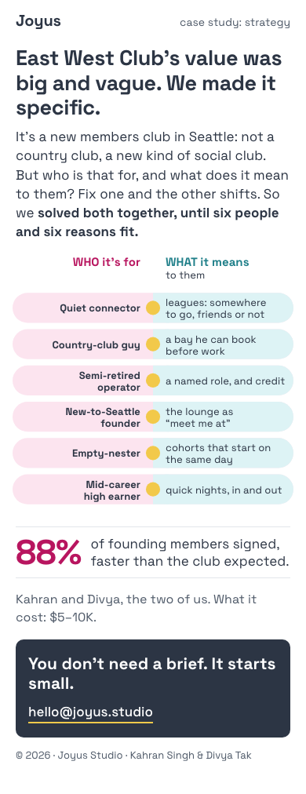
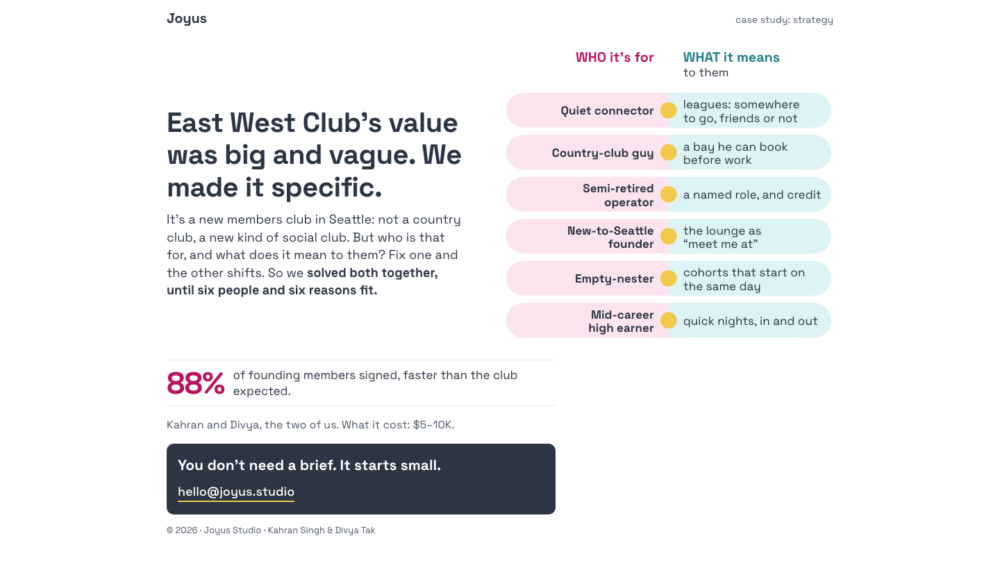
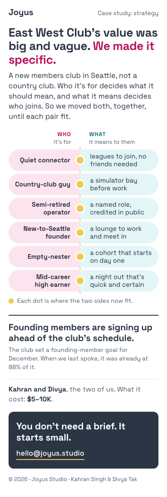
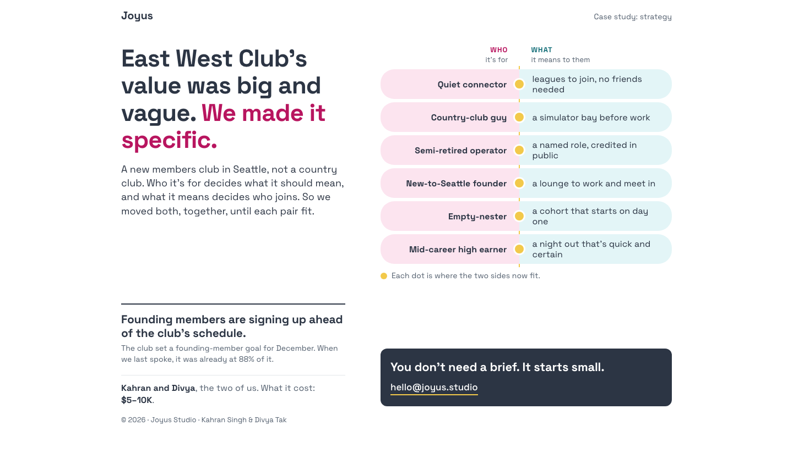
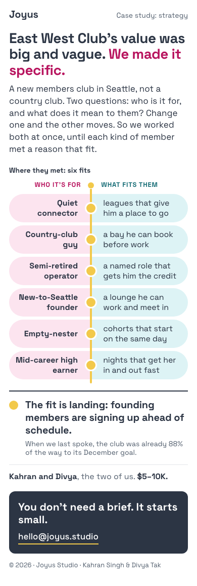
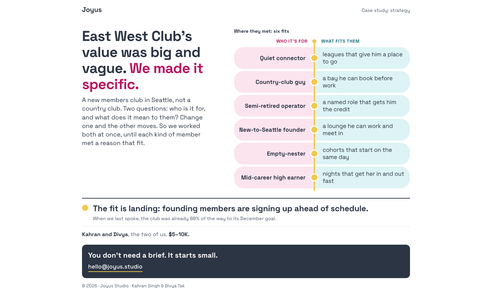
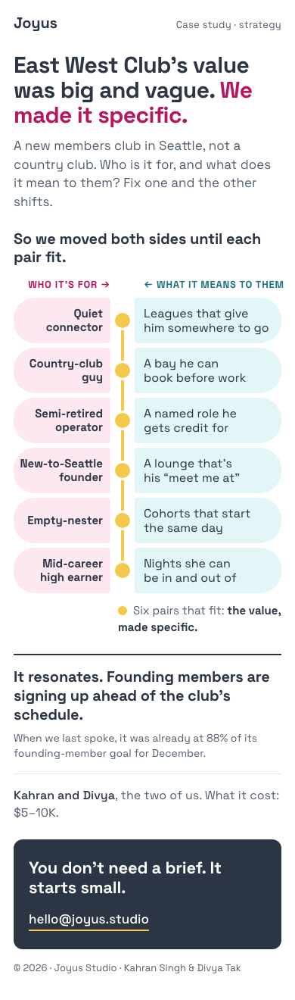
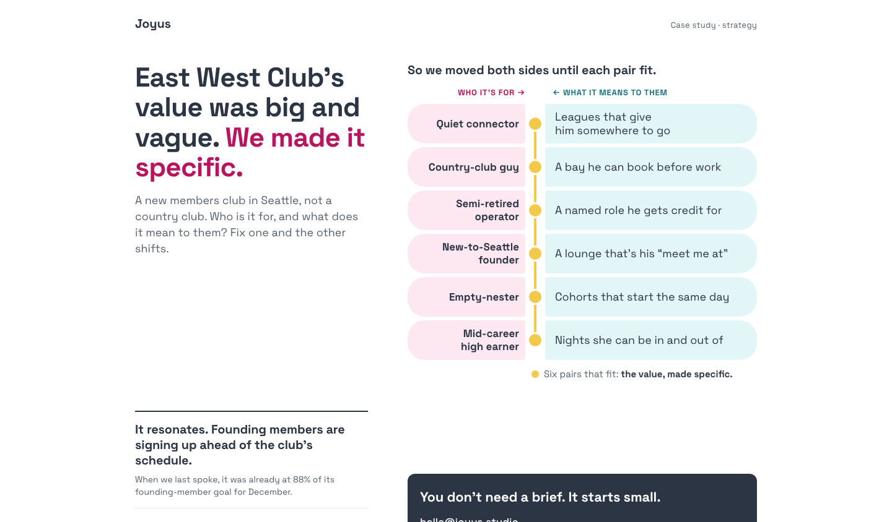
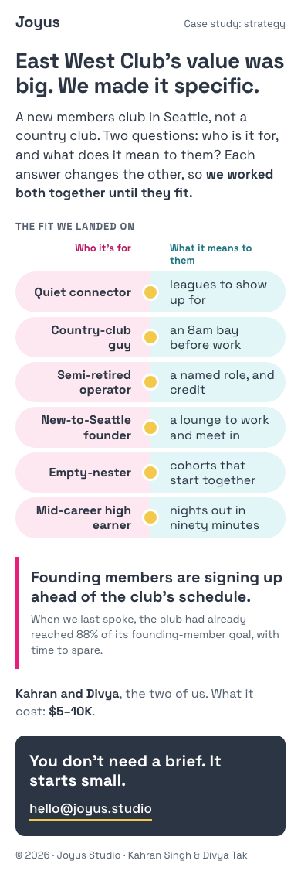
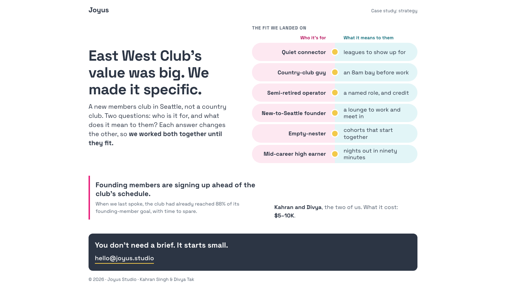

Study 90 · 8 November 2026 · for Kahran
EWC, tightened: 89 d, same information, four ways
Kahran picked 89 d, The equation, cut. Same information, tighter words, content and design: a new brief (brief.md) keeps 89 d's six parts in order and asks for sharper words, six reasons that read as the answer, an equation that looks made, and at most two phone screens. It also corrects the proof. The 88% was never a share of members: the club set a founding-member goal for December and, when we last spoke, was already most of the way there. So the proof leads with ahead of schedule, and 88% appears only as progress toward that goal, small. The builders had no earlier studies, only the brief. The blind judges ran again (ten-second test on screen one by two readers, the insight say-back of 2, the 21 bet questions, a rank). These are the four that passed, each as built, in the rank's order.
"the equation is the right direction. this has the right level of information. now we need to tighten down the design content and words"
Kahran, 8 Nov, on 89 d."the 88 is a weird proof point"
Kahran, 8 Nov: the 88% was progress toward a December founding-member goal, so the story is that they are ahead of schedule and seeing resonance."ewc needed to feel accessible and desirable to the right people. This meant to take the big amorphous value of we are making a 'not country club' or new social club and figure out what that meant to people, which also meant you had to figure out who those people were. And then it was a question of solving the equation, if you will, when everything can be moving, because the customer base was moving and the value deliverable was moving, so you have to find a sustainable place of maxima/equilibrium."
Kahran, 8 Nov, the frame (from Study 88).The baseline · 89 d, The equation, cut (Kahran's pick)
Ten-second test: 1, 1 · insight say-back 1 of 2 · the bet 19 of 42 · 1012px on a phone, 1.2 screens
The page all four start from, unchanged in Study 89. Its proof read the 88% as a share of members who signed, the misreading the new brief corrects.


a · The seam
Ten-second test: 1, 1 · insight say-back 0 of 2 · the bet 23 of 42 · ranked 1st · 1154px on a phone, 1.4 screens
Best at showing what the studio worked out. The lede gives the actual idea: "who it's for decides what it should mean, and what it means decides who joins." Its answers are the most specific, ones a founder can picture: "leagues to join, no friends needed", "a night out that's quick and certain". The joined pills meet on one dashed seam, so the layout itself says "fit", and the single caption line is enough. Short-row labels sit on one line, so it reads fast. Weak spot: the proof spends two sentences building up to "88% of it", which puts weight on the odd number when the story is being ahead of schedule. Cut that to one clause and it wins clearly.
The reader, in their own words: "The studio, Joyus, worked out who East West Club, a new members club in Seattle, is for and what it should mean to each of those people. It matched six member types (quiet connector, country-club guy, empty-nester and so on) to a specific promise for each, such as a simulator bay before work or a named, credited role. It then offers early sign-ups as the sign this works: founding members were ahead of the club's December goal, and the page says 88% of it was already reached when they last spoke. The 88% is the weak spot. It reads as an odd stat with no clear baseline, and the "ahead of schedule" framing is easy to miss." (blind, from screenshots)


b · The meeting line
Ten-second test: 1, 2 · insight say-back 0 of 2 · the bet 22 of 42 · ranked 2nd · 1157px on a phone, 1.4 screens
Strongest design idea. One yellow spine runs through all six pairs, and the proof starts with the same dot ("The fit is landing"), so the result connects back to the diagram. The 88% is pushed down to small print, which is right. Words are looser: the lede runs one sentence too long, and "fit" appears three times in a row ("six fits", "WHAT FITS THEM", "a reason that fit"). Some answers are padded ("a named role that gets him the credit"). The bare "$5–10K." with no label reads like a stray fragment.
The reader, in their own words: "Joyus helped East West Club, a new members club in Seattle, turn a vague value proposition into six specific fits. Each kind of member (quiet connector, founder, empty-nester and so on) is matched to a concrete offer such as leagues, bookable bays or a work lounge. The proof is that founding members were signing up ahead of schedule, already 88% of the way to the December goal when the studio last spoke with them. The 88% figure reads a bit oddly as proof of resonance, since it is a progress number and not a result." (blind, from screenshots)


c · The fit, on one spine
Ten-second test: 1, 1 · insight say-back 1 of 2 · the bet 24 of 42 · ranked 3rd · 1320px on a phone, 1.6 screens
Handles the proof best: "It resonates. Founding members are signing up ahead of the club's schedule", with 88% kept to fine print. That framing should carry over to whichever version wins. The diagram undercuts the message, though. A gap splits every pair into two separate pills with a gutter between them, so it looks like two lists rather than six fits. The extra bold heading ("So we moved both sides until each pair fit") adds a step before the content. The lede's gray body text is faint.
The reader, in their own words: "They took East West Club's big, vague value and made it specific by pairing six kinds of members with what the club means to each, which is the positioning. The page says founding members are signing up ahead of schedule, so it seems to be working. I couldn't tell what the 88% was a share of beyond "founding-member goal for December", which is a thin proof point." (blind, from screenshots)


d · The fit we landed on
Ten-second test: 1, 1 · insight say-back 1 of 2 · the bet 22 of 42 · ranked 4th · 1152px on a phone, 1.4 screens
Has the tightest single answers ("an 8am bay before work", "nights out in ninety minutes"). But the headline drops "and vague" and the colour, so the before/after tension is gone and the first screen is flat. It also stacks labels: an "THE FIT WE LANDED ON" eyebrow, then column heads, then the rows. The proof is the weakest of the four: "reached 88% of its founding-member goal, with time to spare" makes 88% the headline number, which is the odd proof point to lead with. The pink pull-quote bar is a fourth visual style on a short page.
The reader, in their own words: "Joyus helped a new Seattle members club (East West Club) make its big value specific. It paired six member types with what the club means to each, e.g. "Quiet connector" with "leagues to show up for". The result seems to be working: founding members are signing up ahead of schedule, though the "88%" figure is vague without a target to compare it to." (blind, from screenshots)


How it was put together
Each page is the file the blind judges saw (src/a.html to src/d.html), joined into one page by build.cjs: the asked-for option keeps its own font, style and body, the other three leave the page. Nothing redesigned, no words moved. The note under each option is the judges' rank reason; the reader's words are the say-back. The order is the rank's, not the totals': the rank put the clearest picture of the fit first, though the two top-ranked pages scored 0 on the say-back. Every reader flagged the 88% as odd, even where it sits in small print as progress toward the goal; the rank's advice is to keep c's framing ("It resonates. Founding members are signing up ahead of the club's schedule") and cut the number to one clause or drop it. check.cjs pins the rules: four options, no names, no money but the price and the 88%, the 88% only as progress toward the goal, no placeholders, no em dash in our words, at most two phone screens.